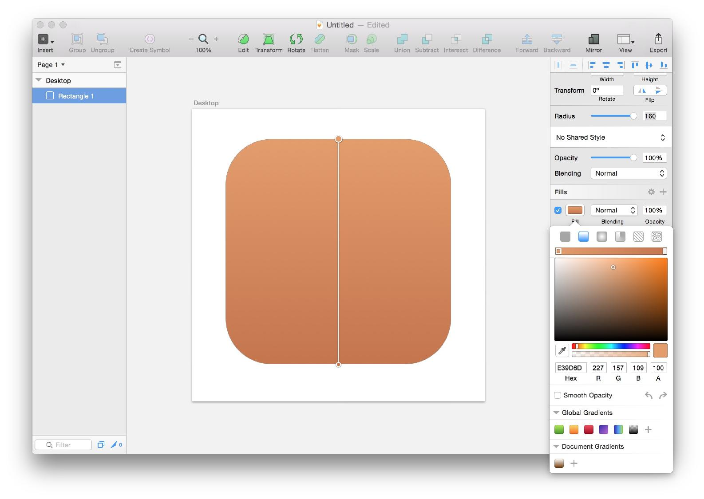
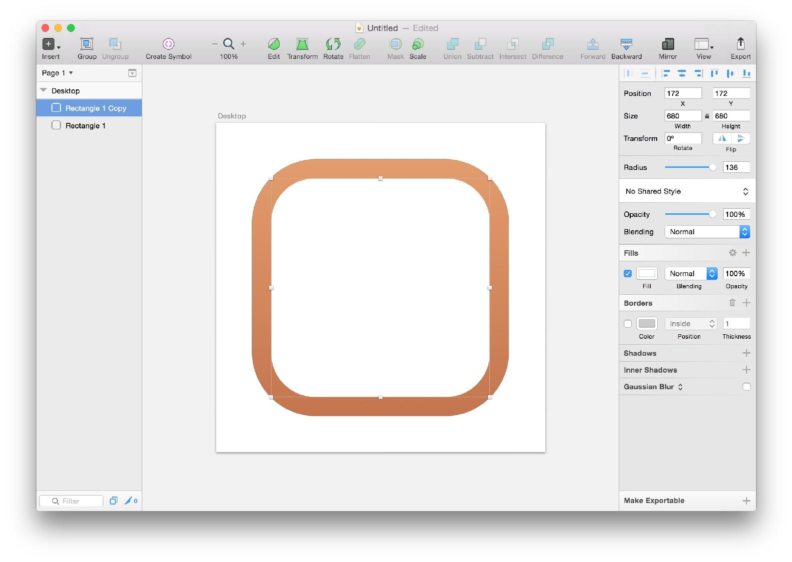

工具 - Sketch 实践 绘制图标
Product Design: 产品的起点 - Sketch 实践 绘制图标
Wunderlist
Wunderlist 的图标是一个很好的实践对象，简单的几何图形，足够丰富的技巧运用。
在完成了这个图标之后，你大可以选择你喜欢的图标进行实践。
分解
分解是进行复刻的第一步，Wunderlist 的这个图标由四部分组成
- 底色
- 白板
- 书签
- 五星
分解之后，我们的任务就变成了逐一实现每个结构，然后再组装到一起。
底色
打开 Sketch 按下 A 新建一个 Artboard，选择右边的 Desktop HD
然后按下 U 进入创建圆角矩形模式，按住 Shift 在刚刚创建的 Artboard 里绘制一个圆角矩形。大约占据 Artboard 的 80%。
绘制完成后，点击右上角的 水平居中 以及 纵向居中 图标来将这个矩形对齐到 Artboard 的中心。
水平居中 
纵向居中
接着修改矩形的圆角半径（Radius）为圆角矩形的四分之一，例如你的圆角矩形高度是 800 那么你的 Radius 就是 200.
接着给这个圆角矩形上一个渐变色，点击右边的 Fills 按钮，选择截图中亮起的 Linear Gradients

渐变滑块左端选择颜色 HEX 值为 E39D6D, 右端选择的是 C4754E。
到此我们就完成了底色的创建。
白板
选中刚刚创建的圆角矩形，按下 Command + C 复制，然后再按下 Command + V 粘贴一个。
修改高度为底色高度乘以 0.85，我的底色为 800 高度，那么此时就是 680 的高度。
修改 Radius 为白板高度除以 5，即 136。

0.85 和 除以 5 都是我用我的 “像素眼” 目测出来的，试了下确实比较接近。(Just Kidding)
复刻的时候目测即可，当然你也可以选择去量一下图标里具体的比例。
接下来是给白板加上阴影。
仔细观察 Wunderlist 的图标阴影，你会发现其实有两级，点击右边的 Shadows 上的加号，添加两个 Shadow
第一个 Shadow 的 Y 为 50，Blur 为 30， Alpha 为 60，Blending 为 Soft Light。
第二个 Shadow 的 Y 为 30，Blur 为 10， Alpha 为 50，Blending 为 Soft Light。
书签
按下 R 进入矩形创建模式，绘制一个矩形宽度大概在 450。
点击 Edit 编辑这个矩形的路径，在底边中心增加一个点，并向上拖动大概 60 的距离，右边的拐角模式选择 Straight。
接着点击左上角的顶点，按住 Shift 再点击右上角的顶点，使这两个点都处于选中状态。然后把右边的 Corners 设置为 5。
再点击一下 Edit 退出路径编辑模式。
完成形状之后就是添加颜色，Fills 选择渐变模式，左端 HEX 为 F85944，右端为 E33727。
Borders 的 HEX 为 C72F22 Thickness 为 3。
完成之后将书签通过键盘方向键向上移动一些，距离大概为 5。
最后给书签增加一个阴影，HEX 值为 9F251B，Alpha 为 70，Blur 为 15。
五星
点击 Insert -> Shape 选择五角星，按住 Shift 绘制一个五角星
使用对齐工具将五角星对齐到中心，修改 Radius 为 35%。
修改五星的 Fills 为白色，Borders 设置颜色的 HEX 为 C72F22，Thickness 为 3。
然后按住 Shift 在左边同时选中 Star 1（五星） 和 Rectangle 3 （书签）点击顶部工具栏的 Subtract
此时就将五星和书签合二为一了，最后给五星增加一个 Inner Shadows，设置颜色为 C72F22，Y 为 5，Blur 为 5。
优化
初稿完成后，我们的 icon 还并不完美，仔细观察原 icon 的底色和书签的顶部，都有一个高光的感觉。
现在我们就需要优化渐变，来实现这个效果。
选中底色，将 Fills 的左端滑块向右拖动一些，然后双击左边的颜色区域，新建一个滑块，颜色 HEX 设置为 FAC298。
然后将中间的滑块向左拖动，使得渐变的过度逐渐缩小，直到一个很细微的距离。
在书签上也重复这个操作，只不过最左端的颜色 HEX 为 C72F22
你可以在这里 获取 到完整的 Sketch 文件。